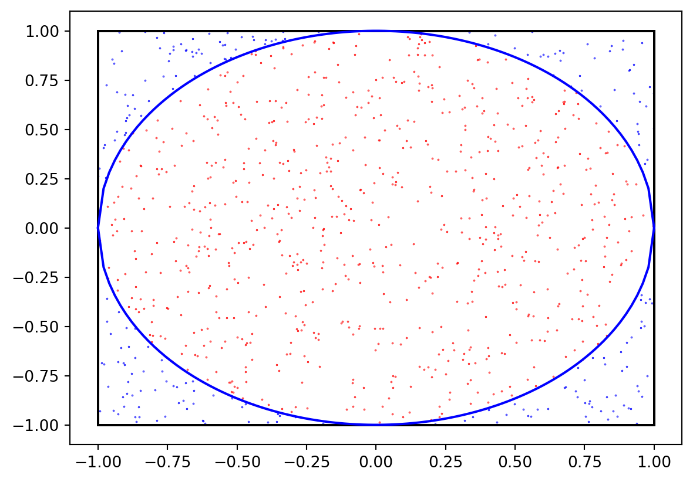

Yukarıdaki verilen integralde $ n=1 $ için kardional fonksiyonu bulalım. Ardından $ A_{i} $ fonksiyonunu elde edeceğiz. Burada $ x_{0}=a $ ve $ x_{1}=b $ olacaktır. Tüm fonksiyonun alanı tek bir yamuğun alanı şeklinde düşünülür.
Burada yaptığımız işlem, $ f(x) $ fonksiyonunu 1 parçaya ayırdık. $ f(x) $ fonksiyonunun integralini, bu parça için bir yamuk çizip ve alanını hesapladığımızda elde ederiz.
Burada gerçek sonuç ile hesaplanan sonuç arasında bir hata olacaktır. Bu hata payına $ E $ diyelim.
\[ E= \int_{a}^{b} f(x)dx - I \]
Bu $ E $ değeri yamuk ile fonksiyonun arasında kalan alandır.
Kompozit Trapezoidal Kuralı
Tüm $ f(x) $ fonksiyonunu bir parçaya ayırmaktansa $ n $ parçaya ayırırız. Bu durumda $ f(x) $ fonksiyonunun integralini $ n-1 $ adet yamuk çizip ve alanlarını toplayarak elde ederiz.
\[ I = \sum_{i=0}^{n-1} I_{i} = \sum_{i=0}^{n-1} \frac{h}{2} (f(x_{i})+f(x_{i+1})) \]
Benzer şekilde hata da her çizilen yamuk için farklı bir değer olacaktır.
Trapezoid Kuralının Uygulaması
import scipy.integrate as scpIntimport numpy as np# Trapezoid Kuralıdef integral_trapezoidal(fonk, solSinir, sagSinir, adimSayisi): h= (sagSinir-solSinir)/ adimSayisi integral=0for i inrange(adimSayisi): integral= integral+ (fonk(solSinir)+ fonk(solSinir+h))* h/2 solSinir= solSinir+ h# Alternatif Algoritma# xVal= np.arange(solSinir, sagSinir+h, h)# for i in range(adimSayisi):# integral = integral + (fonk(xVal[i])+ fonk(xVal[i+1])) * h/2return integral# Trapezoidal kuralını uygula# İntegralini alınacak fonksiyondef fonk(x):return x**2# Trapozoidal Kuralı (0,1) arasında 100 parçaya bölünmüş integraliintegral = integral_trapezoidal(fonk, 0, 1, 10)print(f'Trapezoid Kuralı ile f(x)=x^{2} nin 0,1 arasındaki integrali {integral:.5f}')print('---')# Trapozoidal Kuralının Scipy kütüphanesindeki karşılığıintegral2, hata = scpInt.quad(fonk, 0, 1)print(f'scipy.integrate.quad() ile f(x)=x^{2} nin 0,1 arasındaki integrali {integral2:.5f}')print(f'scipy.integrate.quad() ile f(x)=x^{2} nin 0,1 arasındaki integralin hata payı {hata:.2g}')print('---')
Trapezoid Kuralı ile f(x)=x^2 nin 0,1 arasındaki integrali 0.33500
---
scipy.integrate.quad() ile f(x)=x^2 nin 0,1 arasındaki integrali 0.33333
scipy.integrate.quad() ile f(x)=x^2 nin 0,1 arasındaki integralin hata payı 3.7e-15
---
Alıştırma
Aşağıdaki integrali hem yukarıdaki trapezoidal fonksiyonu ile hem de scipy modülü ile hesaplayın.
\[\int_{0}^{1} e^{-4x^{2}} dx\]
Çözüm
import scipy.integrate as scpIntimport numpy as npdef integral_trapezoidal(fonk, solSinir, sagSinir, adimSayisi): h= (sagSinir-solSinir)/ adimSayisi integral=0for i inrange(adimSayisi): integral= integral+ (fonk(solSinir)+ fonk(solSinir+h))* h/2 solSinir= solSinir+ hreturn integral# Fonksiyondef fonk(x):return np.exp(-4*x**2)# Trapezoid Kuralı# Trapozoidal Kuralı (0,1) arasında 100 parçaya bölünmüş integraliintegral = integral_trapezoidal(fonk, 0, 1, 100)print(f'Trapezoid Kuralı ile f(x)=x^{2} nin 0,1 arasındaki integrali {integral:.5f}')# Trapozoidal Kuralının Scipy kütüphanesindeki karşılığıintegral2, hata = scpInt.quad(fonk, 0, 1)print(f'scipy.integrate.quad() ile f(x)=x^{2} nin 0,1 arasındaki integrali {integral2:.15f}')print(f'scipy.integrate.quad() ile f(x)=x^{2} nin 0,1 arasındaki integralin hata payı {hata:.2g}')
Trapezoid Kuralı ile f(x)=x^2 nin 0,1 arasındaki integrali 0.44104
scipy.integrate.quad() ile f(x)=x^2 nin 0,1 arasındaki integrali 0.441040695381211
scipy.integrate.quad() ile f(x)=x^2 nin 0,1 arasındaki integralin hata payı 4.9e-15
Simpson Kuralı
Trapezoid kuralında $ f(x) $ fonksiyonunu 1 parçaya ayırmıştık. Şimdi $ f(x) $ fonksiyonunu 2 ayıracağız. Bu durumda $ f(x) $ fonksiyonunun Lagrange polinomu 3 noktadan oluşacak ve bu polinom bir doğru değil ikinci dereceden bir polinom olacaktır.
3 nokta alındığında integralin sonucu aşağıdaki gibi olur. \[ I=\sum_{i=0}^{2} A_{i}f(x_{i})=A_{0}f(x_{0})+A_{1}f(x_{1})+A_{2}f(x_{2}) \]
Bu metodu kompozit hale, yani n adet parçaya ayırıp kümülatif olarak toplayalım. Trapozoid kuralındaki gibi adım aralığı, $ h=(b-a)/n $ olarak tanımlanacaktır.
import scipy.integrate as scpIntimport numpy as np# Simpson 1/3 Kuralıdef integral_simpson(fonk, solSinir, sagSinir, adimSayisi): h= (sagSinir-solSinir)/ adimSayisi integral= fonk(solSinir)+ fonk(sagSinir)for i inrange(1,adimSayisi): katsayi= solSinir + i*hif i%2==0: integral = integral+2* fonk(katsayi)else: integral = integral+4* fonk(katsayi) return integral* (h/3)# Trapezoid Kuralıdef integral_trapezoidal(fonk, solSinir, sagSinir, adimSayisi): h= (sagSinir-solSinir)/ adimSayisi integral=0for i inrange(adimSayisi): integral= integral+ (fonk(solSinir)+ fonk(solSinir+h))* h/2 solSinir= solSinir+ hreturn integraldef fonk(x):return np.sqrt(1-x**2)print(f'Trapezoid Kuralı ile f(x)=sqrt(1-x^2) nin -1,1 arasındaki integrali {2*integral_trapezoidal(fonk, -1, 1, 50):.5f}')print(f'Simpson 1/3 Kuralı ile f(x)=sqrt(1-x^2) nin -1,1 arasındaki integrali {2*integral_simpson(fonk, -1, 1, 100):.5f}')print(f'scipy.integrate.quad() ile f(x)=sqrt(1-x^2) nin -1,1 arasındaki integrali {2*scpInt.quad(fonk, -1, 1)[0]:.5f}')
Trapezoid Kuralı ile f(x)=sqrt(1-x^2) nin -1,1 arasındaki integrali nan
Simpson 1/3 Kuralı ile f(x)=sqrt(1-x^2) nin -1,1 arasındaki integrali 3.14029
scipy.integrate.quad() ile f(x)=sqrt(1-x^2) nin -1,1 arasındaki integrali 3.14159
/tmp/ipykernel_3344/3989509976.py:28: RuntimeWarning: invalid value encountered in sqrt
return np.sqrt(1-x**2)
Monte Carlo Yöntemi
Deterministik yöntemlerin aksine, rastgele sayılar kullanarak hesaplama yapılır.
Rastgele işlemler tekrarlanarak yapılır. Burada önemli olan tekrar sayısının olabildiğince çok olmasıdır.
Temelde üç branşta kullanılır: Optimizasyon, sayısal integral ve olasılık dağılımı hesaplaması [1].
Düzgün değişmeyen bir fonksiyonun integralini hesaplamak için kullanışlıdır.
Monte Carlo Yöntemi Kullanılarak Pi Sayısının Hesaplanması
Rastgele sayılar üreterek pi sayısını hesaplayalım.
Bunun için birim çemberin alanı ve kenarı bir olan karenin alanını kullanacağız.
Kenar uzunluğu $ 1 $ olan bir kare ele alalım. Bu karenin içerisine çeyrek daire koyalım. Dairenin alanı $ A_{1} $ olsun, karenin alanı da $ A_{2} $ olsun. Alanların birbirlerine oranı aşağıdaki gibi olacaktır.
Buradan da anlaşılacağı üzere karenin alanının dairenin alanına oranı pi’nin dörtte birine eşittir. Bu oranı Monte Carlo yöntemiyle hesaplayalım.
Bu hesabı tam bir daire (alanı \(\pi\times 1^{2}\)) ve kare (alanı \(2^{2}\)) için de yapabiliriz. Bu durumda da oran \(\pi/4\) olacaktır.
Önce Python ile rastegele sayı üretme fonksiyonlarını inceleyelim. Numpy ile rastgele sayı üreten fonksiyon aşağıdaki gibidir.
import numpy as npnp.random.rand() # 0 ile 1 arasında rastgele sayı üretirnp.random.randint() # belirtilen aralıkta rastgele tam sayı üretirnp.random.uniform() # belirtilen aralıkta rastgele sayı üretirnp.random.choice() # belirtilen diziden rastgele eleman seçer
import numpy as np# 0 ile 10 arasında 5 sayı üretirprint('\n0 ile 10 arasında (10 hariç) 5 sayı:\nnp.random.uniform(0,10, size=(5))\n', np.random.uniform(0,10, size=(5)))# 0 ile 10 arasında 5x2 matris üretirprint('\n0 ile 10 arasında (10 hariç) 5x2 matris:\nnp.random.uniform(0,10, size=(5,2))\n', np.random.uniform(0,10, size=(5,2)))# ['Yazı', 'Tura'] 'yı rastgele seçer.print('\n["Yazı", "Tura"]"yı rastgele seçer:\nnp.random.choice(["Yazı", "Tura"])\n', np.random.choice(['Yazı', 'Tura']))
import numpy as np# np.random modülü ile rastgele sayı üretir.# 0 ile 1 arasında 5 sayı üretirprint('\n0 ile 1 (1 hariç) arasında 5 sayı:\nnp.random.rand(5)\n', np.random.rand(5))# 0 ile 1 arasında 5x2 matrisi üretirprint('\n0 ile 1 arasında (1 hariç) 5x2 matrisi:\nnp.random.rand(5,2)\n', np.random.rand(5,2))# 0 ile 10 arasında 5 tam sayı üretirprint('\n0 ile 10 arasında (10 hariç) 5 **tam sayı**:\nnp.random.randint(0,10,5)\n', np.random.randint(0,10,5))print('0 ile 10 arasında (10 hariç) 5 **tam sayı**:\nnp.random.randint(10, size=(5))\n', np.random.randint(10, size=(5)))
0 ile 1 (1 hariç) arasında 5 sayı:
np.random.rand(5)
[0.84948824 0.52904641 0.42842034 0.18700792 0.31892287]
0 ile 1 arasında (1 hariç) 5x2 matrisi:
np.random.rand(5,2)
[[0.13913982 0.49988233]
[0.90704434 0.07421118]
[0.6434288 0.6376557 ]
[0.21112277 0.76218328]
[0.5675073 0.22163629]]
0 ile 10 arasında (10 hariç) 5 **tam sayı**:
np.random.randint(0,10,5)
[2 2 8 4 4]
0 ile 10 arasında (10 hariç) 5 **tam sayı**:
np.random.randint(10, size=(5))
[4 5 2 6 4]
Şimdi pi sayısını hesaplayalım.
# Pi sayısının hesaplanmasıimport numpy as npimport matplotlib.pyplot as plt# Örnekleme (sample) sayısıN =1000# Kare içerisinde bir nokta oluşturma. Bunun için x ve y koordinatları üretiyoruz.# Karenin kenar uzunluğu 1 olduğu için x ve y koordinatları 0 ile 1 arasında olacak.x = np.random.uniform(-1,1,size=(N))y = np.random.uniform(-1,1,size=(N))# Noktalar çemberin içinde mi dışında mı?# Noktaların orijine olan uzaklıklarını hesaplayalımorijineUzakligi = np.sqrt(x**2+ y**2)# Eğer bu uzaklık 1'den küçükse nokta çemberin içinde demektir.# orijineUzakligi <= 1 ifadesi True veya False döndürür.# True + True = 2, False + False = 0, True + False = 1daireninIci= np.sum(orijineUzakligi <=1)# Tüm noktaların daire içindeki noktalara oranını alırsak pi sayısının dörtte birini buluruz.piSayisi =4*daireninIci/Nprint('Toplam Nokta sayısı :', N)print('Dairenin içindeki nokta sayısı :', daireninIci)print('Dairenin dışındaki nokta sayısı:', N - daireninIci)print('---')print('Pi sayısı:', piSayisi)# ---------------------------# Grafik çizimi# Kareyi çizelim# Üst çizgiplt.plot([-1, 1], [1, 1], 'k')# Alt çizgiplt.plot([-1, 1], [-1, -1], 'k')# Sol çizgiplt.plot([-1, -1], [-1, 1], 'k')# Sağ çizgiplt.plot([1, 1], [-1, 1], 'k')# Çemberini çizelimt = np.linspace(0, 2*np.pi, 100)# Birim çember denklemi: x^2 + y^2 = 1xx= np.linspace(-1, 1, 100)yy= np.sqrt(1-xx**2)plt.plot(xx,yy,'b')plt.plot(xx,-yy,'b')#plt.plot(np.cos(t), np.sin(t), 'b')# Noktaları çizelim# Daire içindeki noktalarplt.scatter(x[orijineUzakligi <=1], y[orijineUzakligi <=1], c='r', s=0.1)# Daire dışındaki noktalarplt.scatter(x[orijineUzakligi >1], y[orijineUzakligi >1], c='b', s=0.1)plt.show()plt.close()
Toplam Nokta sayısı : 1000
Dairenin içindeki nokta sayısı : 775
Dairenin dışındaki nokta sayısı: 225
---
Pi sayısı: 3.1

Monte Carlo İntegrali
Monte Carlo integrali için genel olarak bir \(f\) fonksiyonunun ortalamasını yazalım [2].
\[ <f> = \frac{1}{b-a}\int^{b}_{a}f(x)dx \]
\[ (b-a)<f> = \int^{b}_{a}f(x)dx \]
Tıpkı diğer sayısal integral alma yöntemlerinde olduğu gibi burada da adım aralığını kesikli hale getirmemiz gerekiyor. Bunun için denklemin sol tarafını \(N\) adet eşit olmayan aralığa bölelim. Bu durumda ortalama fonksiyon \(<f>\) de \(N\) adet aralığa bölmemiz gerekecek.
Burada \(x_{i}\)’ler \([a,b]\) aralığında rastgele seçilmiş noktalardır. Bu noktalardan $ N $ adet seçtiğimiz için \(\frac{1}{N} \sum_{i}f(x_{i})\) ifadesi \(<f>\)’in bir yaklaşımı olacaktır. Sonucun doğruluğunu arttırmak için \(N\) sayısının büyüklüğünü arttırmak gerekir.
Elde ettiğimiz denklemin sağ tarafında integral ifadesi olduğu için, herhangi bir \(f(x)\) fonksiyonun \([a,b]\) aralığındaki integrali, denklemin sol tarafına eşittir diyebiliriz.
Burada seçilen \(x_{i}\) noktaları eşit aralıklarla değil, rastgeledir. Yani \(x_{i}\)’lerin birbirlerine olan uzaklıkları eşit değildir. Bundan dolayı fonksiyonun bazı kısımları hızlı değişip bazı kısımları daha yavaş değişiyorsa, Monte-Carlo integrali daha kullanışlı olacaktır.
Bu yaklaşımı kullanarak bir fonksiyon yazalım.
import numpy as npimport matplotlib.pyplot as plt# Monte-Carlo İntegral Yöntemidef integral_monteCarlo(fonk, solSinir, sagSinir, adimSayisi):if adimSayisi>1000000:print('Adım sayısı çok büyük. Lütfen 1.000.000\'den küçük bir adım sayısı giriniz.')returnNone# a ve b arasında n tane rastgele sayı üret x = np.random.uniform(solSinir, sagSinir, size=(adimSayisi)) fonksiyonDegerleri = fonk(x)return ((sagSinir-solSinir)/adimSayisi)* np.sum(fonksiyonDegerleri)def f(x):return x**2adimSayisi =100000a=0b=1print('Monte-Carlo İntegral Yöntemi ile hesaplanan x^2 integral:', integral_monteCarlo(f, 0, 1, adimSayisi))print('Gerçek integral değeri :', 1/3)def f2(x):return np.cos(x)print('Monte-Carlo İntegral Yöntemi ile hesaplanan cos(x) integral:', integral_monteCarlo(f2, 0, np.pi/2, adimSayisi))print('Gerçek integral değeri :', np.sin(np.pi/2))# Grafik çizimiadimSayisi=5x = np.random.uniform(0, 1, size=(adimSayisi))xOrj= np.linspace(0, 1, adimSayisi)fonksiyonDegerleri = f(x)plt.title('Monte-Carlo İntegrali, $f(x)=x^{2}$, $ N=%i $'% adimSayisi)plt.plot(np.linspace(0, 1, 100), f(np.linspace(0, 1,100)), 'g')plt.scatter(x, fonksiyonDegerleri, c='r', s=25, label='Rastgele noktalar')plt.scatter(xOrj, f(xOrj), c='b', s=25, label='Düzenli noktalar')plt.legend()plt.show()plt.close()
Monte-Carlo İntegral Yöntemi ile hesaplanan x^2 integral: 0.33387310133661924
Gerçek integral değeri : 0.3333333333333333
Monte-Carlo İntegral Yöntemi ile hesaplanan cos(x) integral: 1.0012358727650477
Gerçek integral değeri : 1.0
Alıştırma
Aşağıdaki integrali Monte-Carlo integral yöntemiyle hesaplayın.
\[
\int^{1}_{0}\int^{1}_{0}yx^{2}dxdy
\]
Çözüm
import numpy as np# Monte-Carlo İntegral Yöntemidef integral_monteCarlo(fonk,solSinir,sagSinir,adimSayisi):if adimSayisi>1000000:print('Adım sayısı çok büyük. Lütfen 1.000.000\'den küçük bir adım sayısı giriniz.')returnNone# a ve b arasında n tane rastgele sayı üret x = np.random.uniform(solSinir,sagSinir,size=(adimSayisi)) fonksiyonDegerleri = fonk(x)return ((sagSinir-solSinir)/adimSayisi)*np.sum(fonksiyonDegerleri)def f(x):return x**2adimSayisi =10000000a=0b=1# X^2 fonksiyonu için integral değerimonteCarlo_x= integral_monteCarlo(f, a, b, adimSayisi)# y fonksionun integralidef g(y):return monteCarlo_x*ysonuc= integral_monteCarlo(g, a, b, adimSayisi)print('Monte-Carlo İntegral Yöntemi ile hesaplanan x^2 h integral:', sonuc)print('Gerçek integral değeri :', 1/6)
Adım sayısı çok büyük. Lütfen 1.000.000'den küçük bir adım sayısı giriniz.
Adım sayısı çok büyük. Lütfen 1.000.000'den küçük bir adım sayısı giriniz.
Monte-Carlo İntegral Yöntemi ile hesaplanan x^2 h integral: None
Gerçek integral değeri : 0.16666666666666666
Problemler
Problem 1
Aşağıda verilen integrali Simpsons yöntemi ile 100 adımda hesaplayın. \(I\) sonucunu ekrana yazdırın.